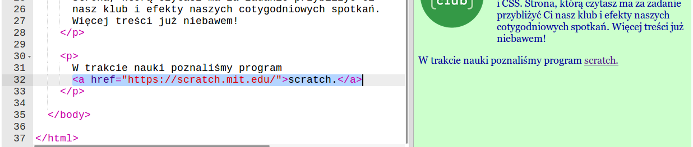
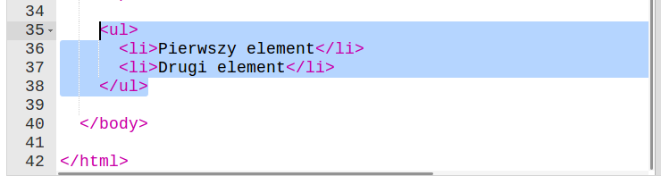
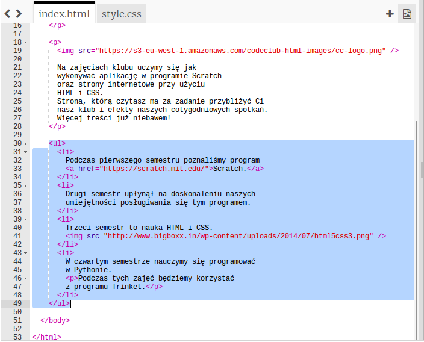
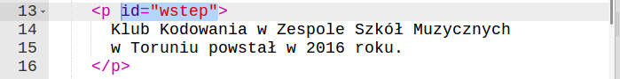
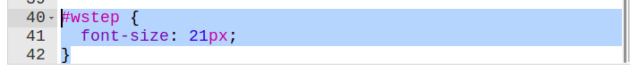

Wstęp
Zadanie dodatkowe w tym semestrze polegać będzie na stworzeniu własnej strony internetowej. Do jej przygotowania użyjemy edytora Trinket. Po zakończeniu semestru Twoja strona, jeśli tego zechcesz, zostanie opublikowana w internecie i każdy będzie mógł ją zobaczyć!
Dodanie odnośników do innych stron
Zadania do wykonania
-
Otwórz swoją stronę internetową. Dodajmy do niej odnośnik. Odnośnik służy do przekierowania użytkownika strony internetowej na inną stronę lub podstronę twojego serwisu. Na wielu stronach z pewnością widziałeś takie odnośniki.
-
Aby dodać odnośnik należy użyć znacznika
a, który ma kluczowy atrybut:href. Atrybut ten wskazuje na miejsce, do którego chcesz przenieść czytelnika. Cały odnośnik ma taką postać:
Widzisz? W nowym paragrafie dodałem odnośnik do strony internetowej Scratcha. Po kliknięciu na niego czytelnik przejdzie do tej strony. Zauważ, że wartość atrybutu
hrefto pełen adres internetowy, najlepiej skopiować go z docelowej strony.
Zapisz swój projekt
Lista elementów
Zadania do wykonania
-
Póki co na naszej stronie są tylko nagłówki, paragrafy, div'y, odnośniki i obrazki. Dodajmy listę, dzięki niej będziemy mogli opisywać różne zestawy informacji, jak np. lista gier, które chcesz opisać, bohaterów Twojej ulubionej książki itp.
-
Aby utworzyć listę należy dodać znacznik
ullubol, każdy element listy powinien znajdować się wewnątrz znacznikali. Tak wygląda poprawnie skonstruowana lita:
Ta lista ma dwa elementy, które sa zwyczajnym tekstem. Elementy listy mogą jednak zawierać w sobie inne poznane znaczniki, takie jak
a,pczyimg. -
Dodam teraz listę rzeczy, których uczymy się podczas klubów kodowania, a Ty dodaj jakąkolwiek listę powiązaną tematycznie z Twoją stroną, może to być lista gier, lista zdjęć kotów, lista piłkarzy ulubionego klubu czy lista pokemonów.

Zobacz, że wewnątrz elementów listy
liużyłem wielu poznanych przez nas znaczników. Strona nie wygląda pewnie teraz tak jak byś chciał, ale znasz już wiele sposobów, żeby ją ostylować. Teraz tylko nauczymy się, jak stylować konkretne elementy!
Zapisz swój projekt
Stylowanie konkretnych elementów
Zadania do wykonania
-
Czasami nie chcemy stylować wszystkich paragrafów, ale np. tylko jeden. Jeśli np. chciałbyś nadać mu wyraziste tło, albo powiększyć czcionkę, możesz do tego użyć identyfikatora. Identyfikator to specjalny atrybut
id, który nadaje się elementowi, o tak:
-
Ale jak ostylować taki element? Bardzo prosto, w zakładce
style.cssdodaj taki kod:
Teraz paragraf ma większą czcionkę, prawda? Każdy element może mieć takie
id, ale nie może być dwóch elementów o tym samymid. Aby ostylować taki element, trzeba dodać nową regułę, którą rozpoczniesz nie od nazwy elementu, jak zazwyczaj, ale od znaczka#i nazwyid, np.#wstep,#tytul-strony.Pamiętaj, żeby nie umieszczać spacji wewnątrz
idani nie używać polskich znaków.